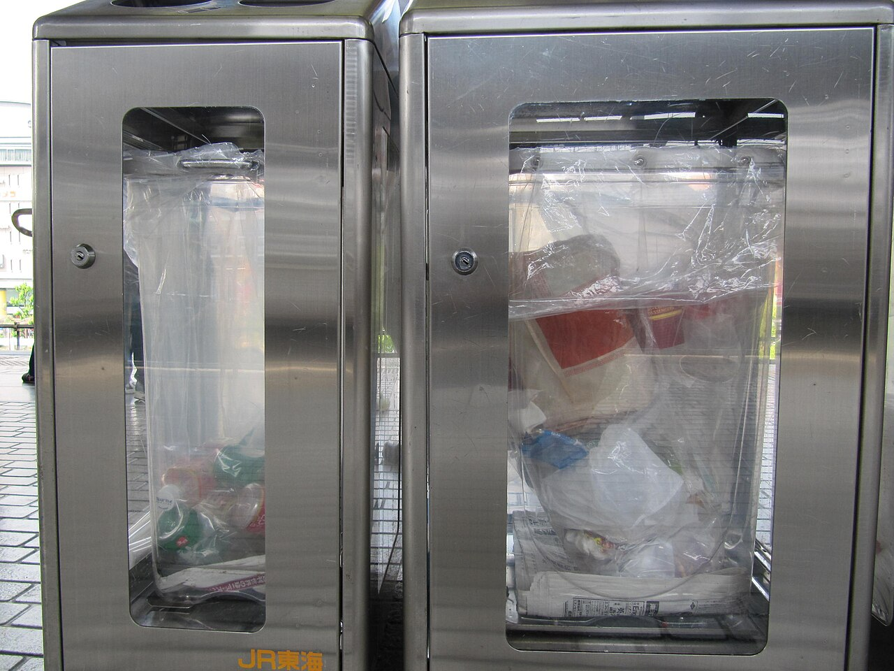

Where to Throw Away Trash

ゴミの捨て方
← All articles / 記事一覧へNo bin nearby? Keep your trash in a small bag and take it back to your accommodation. Ask the front desk or your host where to leave it. Do not bring outside trash to a shop or leave it at a neighborhood collection point.
近くにごみ箱がないときは？ 小さな袋に入れて宿に持ち帰り、フロントや民泊のホストに出す場所を聞いてください。外で出たごみを店に持ち込んだり、近所の集積所に置いたりしないでください。
Reading bin labels / ごみ箱の表示の読み方
| Label / 表示 | Examples / 例 |
|---|---|
| Burnable / 燃えるごみ (moeru gomi) | Food scraps, soiled paper / 生ごみ、汚れた紙 |
| Non-burnable / 燃えないごみ (moenai gomi) | Ceramics, drinking glasses. Ask staff about broken pieces. / 陶器、ガラスのコップ。割れたものはスタッフに相談してください。 |
| Recyclables / 資源ごみ (shigen gomi) | Empty drink cans and PET bottles. Look for a slot marked 缶 (cans) or ペットボトル (PET bottles). / 空き缶やペットボトル。「缶」「ペットボトル」と書かれた投入口を探してください。 |
| Plastics / プラスチック | Food trays and wrappers marked プラ. Check the local guide before sorting them. / 「プラ」マークの食品トレーや包装。分け方は地域の案内で確認してください。 |
At your accommodation / 宿で出すとき
Use the guest bins your hotel or host shows you. If you are staying with residents and helping put out household trash, ask which bag and collection point to use, and on which day and at what time.
ホテルや民泊では、宿が案内する宿泊者用のごみ箱を使ってください。知人の家などで家庭ごみを出すのを手伝う場合は、使う袋、集積所、出す曜日と時刻を家の人に確認してください。
“Where can I throw this away?” / 「これはどこに捨てればいいですか？」 (Kore wa doko ni sutereba ii desu ka?)
Items to ask about / 捨てる前に相談するもの
Batteries, power banks and spray cans: Keep these out of ordinary bins. Show the item to staff and ask how to dispose of it safely.
電池・モバイルバッテリー・スプレー缶：普通のごみ箱に入れず、宿のスタッフに品物を見せて、安全な出し方を聞いてください。
Broken suitcase? Ask your host about disposal and the fee before checkout. For example, Yokohama charges for household bulky-waste pickup and requires advance booking. Size limits and fees depend on the local rules and the item.
スーツケースが壊れたら：チェックアウト前に宿で処分方法と料金を確認してください。例えば横浜市では、家庭の粗大ごみの収集は事前申込みが必要で有料です。対象の大きさや料金は地域や品物によって異なります。